Lineage & History
Gnostic Luciferianism did not emerge in an online vacuum or as an abstract thought experiment. It represents the living culmination of over a quarter-century of hands-on initiatory lodge work, classical sacramental succession, and active community architecture under its primary developer, Jeremy Crow.
Classical Initiatory Roots (1999–2006)
The system is grounded upon a rigorous progression across classical Western esoteric streams:
- Esoteric Freemasonry (1999): Crow was initiated at age 21 into the American Federation of Human Rights (now Universal Co-Masonry), attaining the 3° of Master Mason and serving in lodge officer roles. Subsequently affiliated with the Ancient and Primitive Rite of Memphis-Misraïm (AaPRM-M), co-founding a Triangle in the Orient of Toronto utilizing the French ritual.
- Chivalric Knighthood (October 13, 2000): Knighted in the Sovereign Military Order of the Temple of Jerusalem (Knights Templar) in both American and Portuguese successions by Gnostic Bishop +Ronald Cappello of the Old Templar Church, carrying full traditional faculties to dub new Knights.
- Martinism (Early 2000s): Initiated into the Ordre Martiniste et Synarchique as an integral part of his Gnostic sacerdotal training, obtaining the III° of Supérieur Inconnu (S::I::) under the nomen Frater Lucian.
- Apostolic Gnostic Priesthood (February 8, 2003): Crow was Ordained to the priesthood of the Gnostic Church by mentor and Bishop +Carl Emmanuel (Tau Cerinthus II) within the Gnostic Church of the Glorious Christ in Canada. This lineage descends through Archbishop +Charles Nurse of Barbados and was reinforced by conditional normalization consecrations with prominent North American Gnostic Bishops, including +Stephan Hoeller[cite: 1].
- Laboratory & Inner Alchemy (2003–2006): Mentored directly by Rubaphilos Salfluere within The Heredom Trust, carrying the Paracelsian alchemical current derived from Pat Zalewski and Frater Albertus (Paracelsus Research Society). Training encompassed hands-on laboratory spagyrics alongside Western Inner Alchemy and contemplative pathworking methodologies.
- Hermetic and Thelemic Mystery Currents (Mid-2000s): Crow attained the degree of Theoricus (2=9) in the Hermetic Order of the Golden Dawn and engaged in operational lodge roles within the Ordo Templi Orientis (OTO), serving as Toronto Body Treasurer, Black Guard during Minerval initiations, and receiving baptism in the Ecclesia Gnostica Catholica (EGC).
Community Infrastructure & Public Platforms
Recognizing the need to transition the wider movement away from insular dogmatism and into open collaboration, Jeremy Crow established broad community infrastructure:
- Luciferian Research Society (Founded August 2008): Established not as a single esoteric order, but as an open, non-dogmatic community hub designed to serve individual practitioners and host discussion groups for sovereign orders worldwide, including the Order of Phosphorus, the Order of the Horned God, and the Novus Ordo Luciferi. The LRS continues to expand physically through regional community branches known as Obelisks.
- Flambeau Noir (First Produced Summer 2012): Originally produced as the International Left Hand Path Conference, this was the first public LHP themed international conference open to the entire esoteric community rather than restricted to a single organization. It was later codified as Flambeau Noir to establish a distinguished, recurring physical gathering.
- The New Luciferian Era (Inaugurated December 21, 2012): Officially announced and ritualistically inaugurated by Crow as the beginning of Year Zero of the New Luciferian Era, marking a global turning point toward conscious self-sovereignty.
- Greater Church of Lucifer / Assembly of Light Bearers (2014–2017): Crow served as early president, and brought in Michael W. Ford and Hope-Marie Ford as equal co-presidents, overseeing rapid global expansion across more than a dozen countries, successfully preserving administrative integrity, and later rebranding the project as the Assembly of Light Bearers before the organization entered its inactive phase.
The Genesis of Gnostic Luciferian Alchemy & NOL
Over more than two decades, curriculum developments were tested and refined across specialized working groups and initiatory vehicles, including the Ordo Luciferi under Crow's leadership, the Titanic Order of Prometheus, the Ziggurat of Enki, and early foundational texts such as the limited-edition Initiation Into the Left Hand Path.
These various streams were evolved, expanded, and fully integrated into a coherent occult discipline: Gnostic Luciferian Alchemy. This operational system unites ancient Ophite gnosis, Promethean Bodhisattva ideals, Western Inner Alchemy, and Lucid mastery of the simulation.
To serve as a sovereign mystery school for this system, the Novus Ordo Luciferi was formally founded and ritualistically inaugurated on the Winter Solstice, December 21, 2023. Operating with its ecclesiastical arm, the Gnostic Temple of the Morning Star, it provides an uncompromised initiatory structure operating in accordance with Luciferian first principles.
